Ray Optics Simulation
An open-source web application to simulate reflection and refraction of light.
Written in HTML, CSS and JavaScript.
Tools
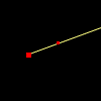
Ray
A single ray of light defined by two points.
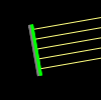
Beam
A parallel beam of rays emerges from a line-segment, with density controlled by the "Ray density" slider.
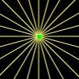
Point Source
Rays emerge from a single point, with number controlled by the "Ray density" slider.
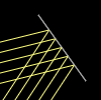
Mirror
Simulate the reflection of light on a mirror.
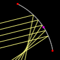
Mirror (Arc)
A mirror whose shape is part of a circle, which is defined by three points.
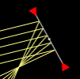
Ideal curved mirror
The idealized "curved" mirror which obeys exactly the mirror equation (1/p + 1/q = 1/f). The focal length (in pixels) can be set directly.
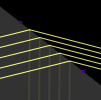
Glass
Simulate the the refraction and reflection of light on a surface. The intensities are calculated by assuming unpolarized.
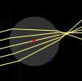
Glass (Circle)
Glass with circle shape, defind by its center and a point on the surface.
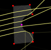
Glass (Other shapes)
Glass with any shapes constructed from line segments and circular arcs, including prisms and "spherical" lenses.
Glass (Ideal lens)
An ideal lens which obeys exactly the thin lens equation (1/p + 1/q = 1/f). The focal length (in pixels) can be set directly.
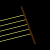
Blocker
A line-segment light blocker which absorbes the incident rays.
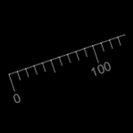
Ruler
A ruler from a point for zero and another point. The scale is in pixels.
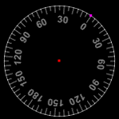
Protractor
A protractor defined from center and another point for the zero direction. The scale is in degrees.Views
Rays
Show the rays. When the "Ray density" is high, they appears to be continuous.
Extended Rays
Show both the rays and its extension. Orange indicates backward extensions, and gray indicates forward ones.All Images
Show the position of all images. Yellow points indicate real images, orange indicate virtual images, and gray (none in this picture) indicate virtual objects. Note that some images cannot be detected if "Ray density" is not high enough.Seen by observer
Simulate the rays and images seen from some position. The blue circle is the observer. Any rays crossing it are considered to be "observed". The observer do not know where the rays actually begin, but may think they begin at some point(s) if they intersect there. The rays are shown in blue, and the point(s) in orange.